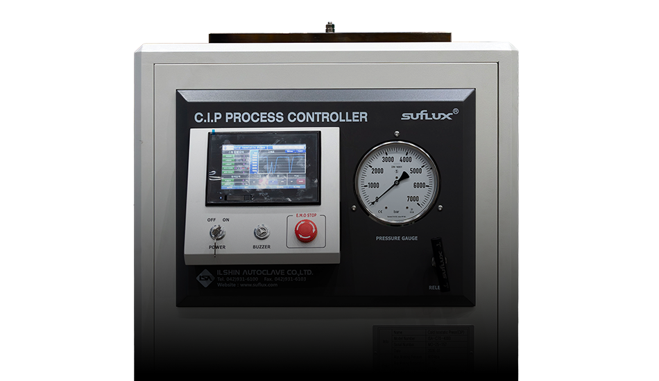

Ilshin Autoclave
ISOSTATIC PRESS 기술자료
초고압 기술과 정밀한 제어 시스템을 바탕으로 구축된 등방압 가압장치 솔루션입니다. 일신만의 독보적인 기술력으로 최상의 공정 환경을 제공합니다.

맞춤형 장비 라인업
실험실용 소형 장비부터 산업용 대형 양산 라인까지, 고객의 공정에 최적화된 맞춤 솔루션을 제안합니다.
초고압 정밀 제어
일신오토클레이브만의 고유 기술로 압력과 온도를 실시간 정밀 제어하여 결과물의 균일성을 보장합니다.
글로벌 안전 인증
ASME, CE, KCS 등 국내외 압력용기 주요 인증을 획득하여 가장 안전한 작업 환경을 제공합니다.
전용 운영 소프트웨어
자체 개발한 직관적인 UI의 운영 시스템을 통해 복잡한 가압 공정을 쉽고 체계적으로 관리할 수 있습니다.